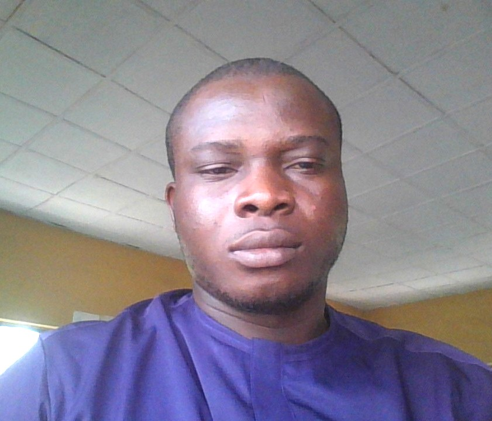

Home
About Me
Hi, my name is David and I’m a student of web development based in Aba, Abia State, Nigeria. I enjoy learning how to design and build responsive websites that adapt beautifully across devices. My focus is on creating clean, accessible, and user-friendly interfaces using HTML, CSS, and JavaScript.
Beyond coding, I’m passionate about problem-solving and continuous learning. I believe that technology can empower people and communities, and I’m excited to contribute to projects that make a positive impact. This portfolio showcases my coursework and projects from WDD231, including the Chamber of Commerce site and my final project.
Certificate Courses
Total Credits:
Student Photo
